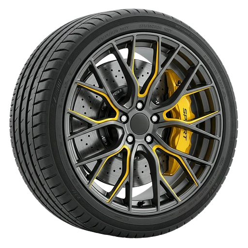
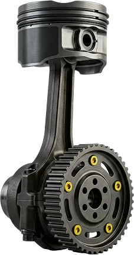
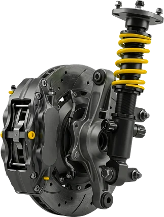
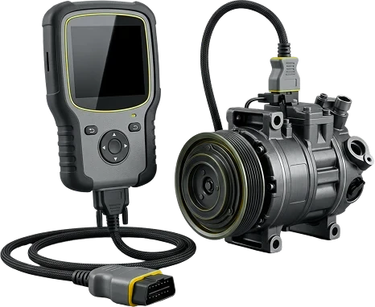
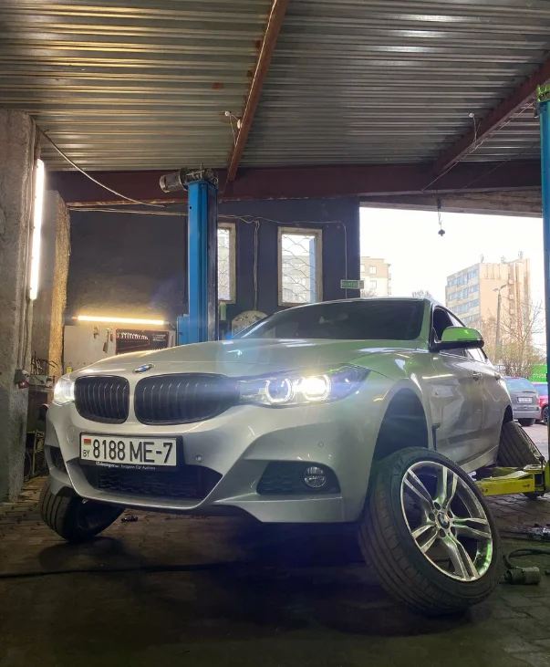
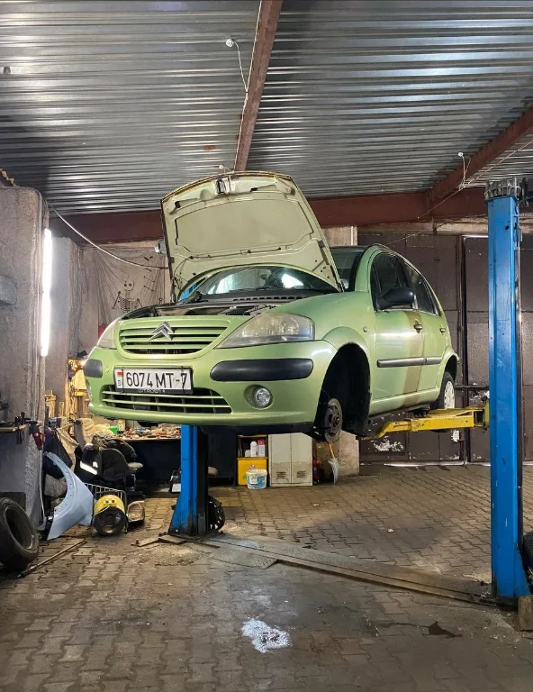
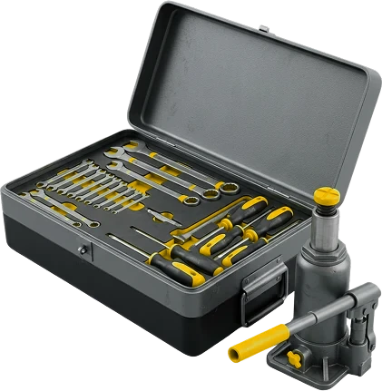

Д
Денис Зубков30 августа
Менял две передние пружины. Приехал к назначенному времени, сделали быстро, хотя машина 1996 года. Запчасти заказали сами, цену согласовали, после ремонта позвонили. Теперь обслуживаюсь здесь.
Автосервис ASM в Минске: диагностика, двигатель, ходовая, электрика и коробки передач.

Менял две передние пружины. Приехал к назначенному времени, сделали быстро, хотя машина 1996 года. Запчасти заказали сами, цену согласовали, после ремонта позвонили. Теперь обслуживаюсь здесь.
Приехала с перегревом — быстро помогли найти причину. За проверку и поиск неисправности цены адекватные.
Заранее позвонил, узнал цену замены шин и есть ли очередь — всё устроило, и расположение удобное. Шины поменяли минут за 30, мастер молодой, но опытный. Весной приеду снова.
На Mercedes A-класса 22 лет сломалась ручка и не открывался капот. Мастера не отказались от мелкой работы — разобрались и сделали.
Ехал из Бреста в Россию, в дороге сломался ступичный подшипник. Приняли сразу, заказали деталь и поставили. Большое спасибо.
Отличный сервис и всегда хороший подход. Возим к ним все свои машины, на шиномонтаж всегда можно быстро попасть.
Листайте вбок →



По предварительной записи


Условия подскажем по телефону
Или наличными
Об актуальных акциях — по телефону
Расскажите, что с машиной
Подберём удобный день и час
ул. Сурганова, 50, корп. 2
